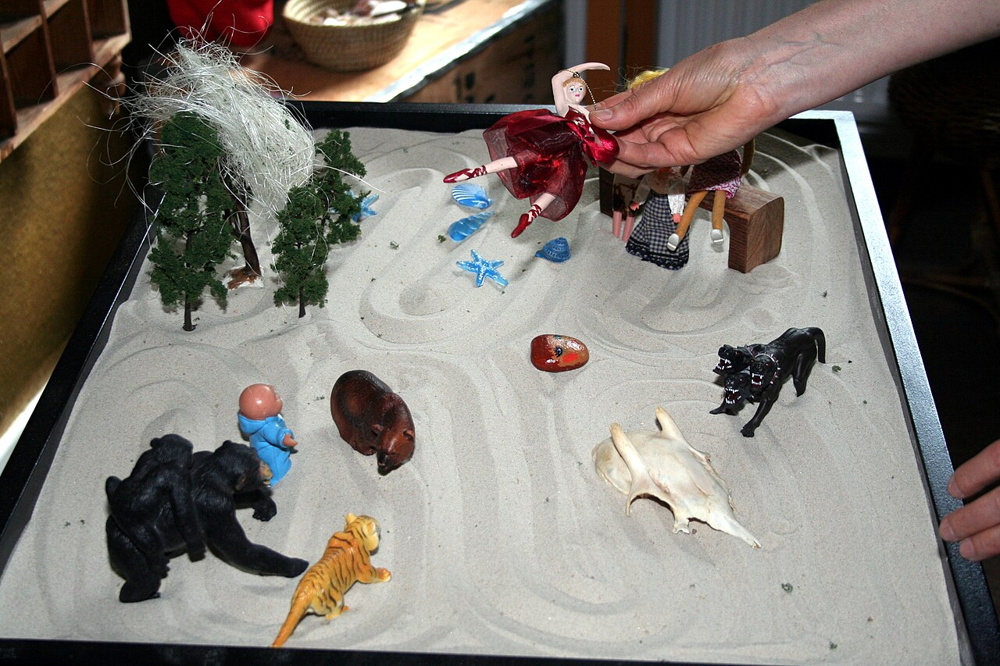

Síguenos en redes
Sigue a Qhali Nuna en Facebook, Instagram y TikTok y muéstralo al llegar a tu cita: te descontamos el 10 % de tu consulta.
Un espacio para hablar de lo que estás viviendo, con atención presencial en nuestros dos locales o por videollamada desde cualquier lugar del Perú.
Sigue a Qhali Nuna en Facebook, Instagram y TikTok y muéstralo al llegar a tu cita: te descontamos el 10 % de tu consulta.
Consultas a mitad de precio en tu cumpleaños, el aniversario del centro, el Día del Psicólogo Peruano o por convenio con tu institución.
Si estás pasando un momento económico difícil, conversamos y acordamos entre ambas partes un monto que puedas pagar.
Atendemos a niños, adolescentes, adultos, parejas y familias. Elige el servicio que buscas y cuéntanos qué necesitas.
Para duelo, depresión, ansiedad, adicciones, ruptura amorosa y otros momentos difíciles.
Sesiones con tu pareja o tu familia para comunicarse mejor y resolver juntos.
Sesiones en grupo guiadas por un psicólogo, para compartir y aprender con otras personas.
Para niñas y niños con dificultades para hablar, pronunciar o comprender lo que escuchan.
Apoyo cuando a tu hijo le cuesta aprender, concentrarse o manejar su conducta en casa o en el colegio.
Acompañamiento para niños con autismo (TEA) o TDAH, con orientación para su familia.
Actividades para favorecer el desarrollo de bebés y niños pequeños en sus primeros años.
Atención psicológica para niñas, niños y jóvenes, con la participación de la familia.
Para jóvenes que están por elegir una carrera u oficio y quieren decidir con más claridad.
Dinos qué evaluación necesitas y te explicamos cómo es y cuándo podemos hacerla.
Talleres y charlas de salud mental para la población en general. Escríbenos para coordinar uno.
Psicoterapia y orientación por videollamada, desde cualquier lugar del Perú.
Si te sientes listo para dar el paso, estamos aquí para acompañarte. Son solo tres pasos.
Escribe al número del local que te quede más cerca: Espinar o Sicuani.
En nuestro local de Espinar, en el de Sicuani o por videollamada desde casa.
Acordamos juntos el día y la hora, y comienzas tu proceso a tu ritmo.
Acompañamos en el duelo, la depresión, la ansiedad, las adicciones y las rupturas amorosas, y apoyamos a niños con dificultades de lenguaje, aprendizaje, conducta, autismo o TDAH. Cuéntanos qué te preocupa.
Haz un test psicológico
Tenemos dos locales en la región: uno en Espinar y otro en Sicuani. No necesitas viajar lejos para recibir atención psicológica.
Si vives lejos o tienes poco tiempo, puedes tener tus sesiones por videollamada desde cualquier lugar del Perú.
Atendemos a niños, adolescentes y adultos, y también a parejas y familias. Un solo lugar para cuidar la salud mental de los tuyos.
Lo que conversas en sesión queda entre tú y tu psicólogo. Es un lugar seguro para decir lo que sientes, sin juicios.
Instala nuestra app en segundos, sin pasar por ninguna tienda. Funciona en línea y siempre está al día con nuestra página.
Escríbenos por WhatsApp y te respondemos para acordar el día. Para una sesión en línea, escribe a cualquiera de los dos números.
Sesiones por videollamada, desde tu casa o donde te sientas cómodo, en cualquier lugar del Perú. Escríbenos a cualquiera de los dos números para coordinar.
Entrar a mi sesiónNuestros tests psicológicos te ayudan a ponerle nombre a cómo te sientes y a saber si te puede servir empezar una terapia. Tenemos ocho tests gratuitos con resultado al momento, también para conocer a tus hijos.
Ver los testsArtículos escritos por nuestro equipo para entender lo que sientes y saber cuándo pedir ayuda.
Nuestro nombre viene del quechua y resume lo que buscamos contigo: un alma saludable.
Al principio es normal tener dudas. Aquí están las preguntas que más nos hacen. Si tienes otra, escríbenos por WhatsApp.
Pedir una citaSí. Diversos estudios muestran que, para muchos problemas frecuentes como la ansiedad o la depresión, la terapia por videollamada puede ser tan útil como la presencial. Lo importante es tener un lugar privado y una buena conexión.
A la hora de tu cita, abre Mi sesión en línea en la página o en la app. Escribe tu nombre, elige a tu psicólogo, avísale por WhatsApp que estás listo y entra a la sala de Google Meet. Tu psicólogo te dejará pasar. En el celular necesitas la app de Google Meet.
Acordamos contigo el día y la hora por WhatsApp. A la hora de la cita te conectas por videollamada desde tu celular o laptop. Te recomendamos usar audífonos y estar en un lugar donde puedas hablar con tranquilidad. Lee nuestros consejos.
Tu primera sesión es gratis. En ella conversas con tu psicólogo y ven juntos qué necesitas. Si decides continuar, te proponemos un plan según tu caso y te decimos el precio antes de empezar.
En Espinar, en la calle Alfonso Ugarte, cerca de Pollón I. En Sicuani, en el jirón 28 de Julio, en el antiguo local de la RENIEC.
El trabajo con tu psicólogo es el mismo. Cambia el lugar: en línea te ahorras el viaje y te atiendes desde casa; en el local tienes un espacio preparado para la consulta. Algunas evaluaciones y la atención a niños pequeños suelen hacerse mejor de forma presencial.
Sí. Atendemos a niñas, niños y adolescentes, y también a adultos, parejas y familias. Con los niños trabajamos con juegos y actividades, y los padres participan en el proceso.
Depende de lo que necesites. En tu primera cita, tu psicólogo te explica cuánto dura cada sesión y con qué frecuencia conviene vernos, y lo acuerdan juntos.
Escríbenos por WhatsApp lo antes posible y buscamos juntos otro horario.
No necesitas estar “muy mal” para ir al psicólogo. Si algo te preocupa, te quita el sueño o afecta tus relaciones, la terapia te puede ayudar. Si tienes dudas, puedes empezar con uno de nuestros tests psicológicos.
Sí. Lo que conversas en sesión es confidencial, como establece el código de ética de los psicólogos. Solo se rompe esa confidencialidad si tu vida o la de otra persona corre peligro.
Sí. Hacemos intervención en autismo (TEA) y TDAH, y orientamos a la familia para acompañar en casa y en el colegio. Escríbenos para contarnos el caso y coordinar la primera sesión.
Sí. La terapia de lenguaje ayuda a niñas y niños con dificultades para hablar, pronunciar o comprender, y la estimulación temprana favorece el desarrollo de bebés y niños pequeños.
Sí. Acompañamos a jóvenes que están por elegir una carrera u oficio, para que decidan conociendo mejor sus intereses y habilidades.
Sí. Damos talleres y charlas de salud mental para la población en general. Escríbenos por WhatsApp para coordinar el tema, el lugar y la fecha.
Sí. Dinos qué evaluación necesitas y te explicamos cómo es y cuándo podemos hacerla.
Si piensas en hacerte daño o sientes que no puedes más, busca ayuda de inmediato. Llama gratis a la Línea 113, opción 5, del Ministerio de Salud, que atiende las 24 horas, o al 106 (SAMU) en una emergencia. También puedes acudir al hospital más cercano.